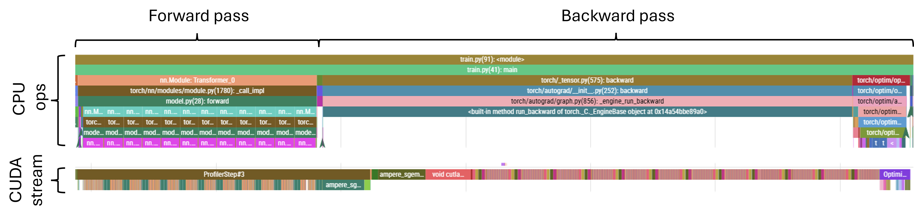
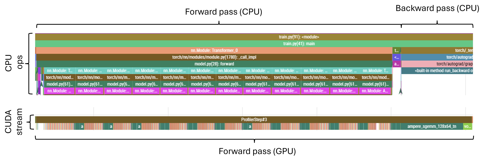
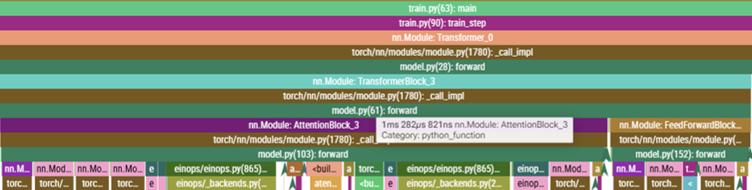
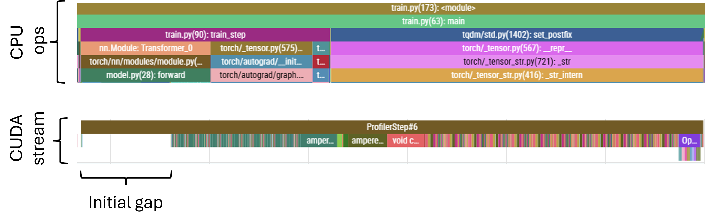
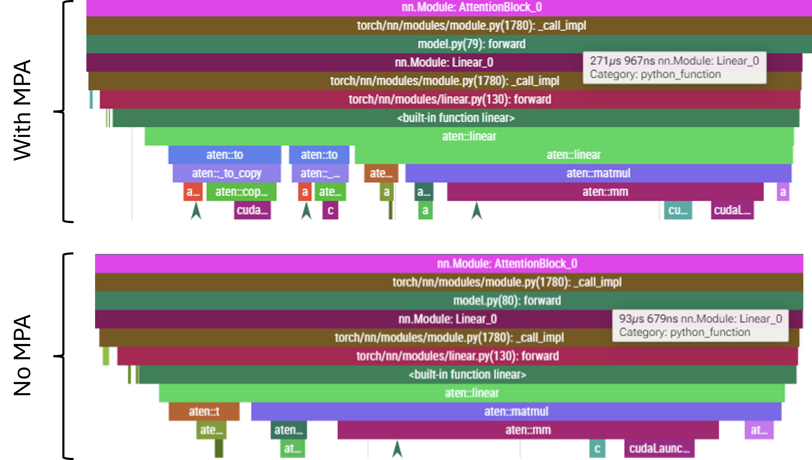
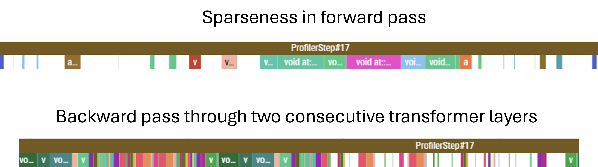
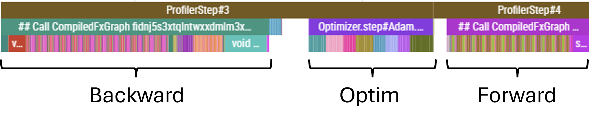
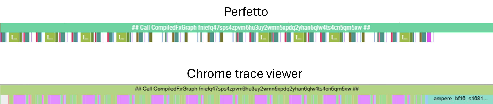

Phase 3
Intro
Equipped with the logging and profiling tools, in this part we will systematically identify and chip away at the bottlenecks in our pipeline.
Coming into this, I have some idea of what tricks exist that could make the model faster. But instead of implementing them blindly in any arbitrary order, the aim is to first build a motivation for adding a particular feature by identifying and diagnosing bottlenecks in our setup, formulating a hypothesis on why and how a particular solution should address the that bottleneck, and only then implementing and validating the reesulting speedup.
Batching loss computation (aka. the low hanging fruit)
Let’s start with something simple. Already when testing out the logging functionality in the previous part, we noticed that our for-loop-based implementation of the loss calculation, naive in the name of making the impleentation intuitive to read, was terribly slow. In this simple MR, we make use of the batched mode of PyTorch’s cross entropy instead.
Let’s profile the run again, but this time with a model size representative of GPT-2 Small (albeit with a slightly shorter context window, as I am still working in fp32, so the full size context, with my naive implementation, does not fit on the chip).
Unsurprisingly, the looped loss still features the repeated add_ and select_backward calls.
Also, note that the CPU time is much greater than the CUDA time - meaning we are launching a ton of kernels small kernels, which the GPU executes promptly, and then ends up waiting around for the next one to arrive. This is not great from the utilisation point of view!
By batching our loss computation, we are back to a much more reasonable situation, where we are spending most of our time multiplying matrices.
The good news is that we have reduced the total runtime significantly; the CPU time is less because there are much fewer kernels to launch, and the GPU time is less because, well, there are much fewer kernels to execute.
The bad news is that the CPU time is still much greater than the GPU time - meaning that there are likely times during the training iteration where the GPU sits idle. Not ideal!
Next, we will try to further reduce the number of kernels we launch, and make the individual kernels more substantial.
MHA fusion
Next, let’s look at the complete profile trace to see exactly how the operations in our forward and backward passes are scheduled.

We can see that the GPU is busy most of the time - the CUDA stream portion of the trace looks fairly contiguous, without any major gaps. But let’s look more closely, starting with the forward pass.

When we zoom in, a few things become apparent:
Vast majority of the CPU time is spent launching kernel associated; in the bottom layer of the CPU trace, pink segments correspond to MHA while the (barely visible) adjacent brown segments correspond to feed-forward blocks
CUDA-wise, we have the pairs of relatively large green blocks corresponding to the feed-forward matmuls interspaced with regions of small kernels corresponding to attention projections and other attention ops
- While the FF matmuls keep the GPU busy and create a bit of a work backlog, the attention kernels are slow to launch and in the latter parts of the attention layer we can observe the CUDA stream becoming sparse
The forward pass ends with a very large operation, corresponding to the large un-embedding matmul
While it may be possible to pick faster kernels for some of our large matmuls and accelerate the computation that way, we have a far more obviously-bad issue to address first. The GPU sitting idle is never a good thing, so we should work towards reducing the wait times experienced in the attention layers. By re-framing the attention computation in a way that requires queueing fewer, large kernels instead of many small ones we may be able to reduce/remove those wait times. At the same time, we may possibly also reduce the further optimisation to a challenge already faced in the FF and unembedding layers: accelerating large matmuls.
One such reframing of the attention operation is Fused Multi-Head Attention (Fused MHA). Here, instead of carrying out the individual head projections separately and sequentially, we concatenate the projection matrices into a single, large matrix to obtain projections for all heads in a single matmul. In fact, we can go further, and concatenate not just the matrices for a single type of projection (say, all the \(n_{\text{layers}}\) \(Q\) matrices), but also all the other projections (provided that the output dimension of \(Q\), \(K\) and \(V\) projections is the same). Then, instead of launching \(n_{\text{layers}} \times 3\) separate kernels, we just launch one large one, followed by a quick splitting operation to disentangle the resulting matrix to extract individual heads’ projections for further processing.
Let’s observe how implementing FusedMHA affects the timing of CPU ops:

While the launching time for the FF layer kernels remains unchanged (as expected - we only modified the attention layer), the launching time for the attention layers has come down from more than 7ms to just over 1ms. That’s a great improvement! The overall execution times have also reduced, from ~7.5s CPU time and ~4.6s CUDA time down to 5.0s and 4.0s, respectively. The MR also net-removes lines, which is always pleasing. The CUDA stream is now also packed at all times. Well… Almost all.
Causal mask pre-allocation
Reducing the CPU time has also revealed another issue. What looked like a small amount of dead-time at the start of the forward pass (visible in the previous profiler runs) is now, since it hasn’t changed in absolute terms, proportionally a much larger gap:

There will always be a bottleneck! If we think of the ‘inefficiency’ of our setup as a quantity normalised to unity, when we reduce one component, other components simply expand to become a larger share of the total.
This particular issue corresponds to the allocation of the causal mask used in the attention layers. Currently, the mask is allocated at the start of every forward pass. Given that the mask is of fixed shape however, this can be done once, at initialisation, and subsequently we just have to make sure that the mask is moved over to the GPU once the device variable is known at runtime. We just need to be careful if the sequence lengths become variable, but for now, given that we simply chunk the corpus into equal token-length samples and aren’t using jagged tensors or anything of that nature, pre-allocating a static mask should be okay.
This simple fix has reduced the CPU time from ~5s down to ~4.6s - a pretty good gain for moving two lines around!
Mixed precision arithmetic
There are some other, smaller inefficiencies in the GPU utilisation. Some stem, I believe, from the need to synchronise to obtain quantities for logging. These are currently small, and we don’t want to be flying blind, so we’ll leave it as-is for now.
Instead, now that our forward pass consists mostly of relatively large matmuls (QKV-projections, dot-product attention coefficients, weighted linear composition of the value projections and the out-projection for attention; and the standard up- and down-projection in the feed-forward layer), it is reasonable to try and focus on universally speeding up our matmuls.
Accelerators can typically handle more operations at lower precision; for example, the A100 I am using has a theoretical throughput of 19.5 TFLOPS using fp32, but with bf16 this jumps up to 312 TFLOPS. That’s as much as 16x faster, while taking up half the memory!
Implementing MPA leads to a massive acceleration of the matmul kernels, by a factor of about 11x; the large linear layers which previously were the single largest individual contributors to the CUDA stream, taking ~1.1ms each, now clock in at around \(100\,\mu\text{s}\). For the standard 15 step profiling run, we nearly halve the overall run time, from 4.6s CPU time down to 2.4s. Active time of the CUDA stream is now dominated by elementwise kernels like additions, and by softmax operations.
This acceleration of CUDA operations actually means that the GPU runs ahead of the CPU. The CPU throttling issue is further exacerbated by the fact that, with MPA, there is a need to cast the operands into lower precision. These conversions are done on the GPU (where the underlying tensors already reside), but the kernels need to be launched on the CPU. As a result, while launching the fused MHA Linear layer used to take \(<\!100\,\mu\text{s}\) can now take \(>\!250\,\mu\text{s}\). Below they are shown scaled to the same length, but note the timing tag displayed indicating the overall duration. Note also the aten::to blocks present in when MPA is active - these are exactly the conversions applied by autocast.

Before we implemented MPA, the CPU had a lot of slack and was waiting at sync points for a significant proportion of time. The reduction in kernel execution time, coupled with the increased kernel launching time due to dtype casting, all of this slack is consumed completely an still insufficient to keep the GPU occupied. Note that this applies to both the forward and backward pass: casting operations also stretch the CPU timeline, leading to sparseness in the CUDA stream for the backward pass. The situation in the backward pass is a little better, and there are two specific reasons for this. Firstly, since the backward pass start with a number of large matmuls (principally the loss computation and final unembedding), which queues up a significant amount of work, buying the CPU some additional scheduling time. Secondly, to compute both the gradient artifact for the particular weights matrix and the temporary values required to propagate the gradient further back through the network; this means that, in general, there will be more compute associated with the backward pass than with the forward pass.
Nonetheless, even the backward eventually becomes sparse as the GPU gradually drains the scheduled backlog. An example forward pass through a transformer layer (these are always equally sparse - the CPU never gets the opportunity to build a backlog) and of backward pass through two consecutive transformer layers at the point where the CUDA stream becomes sparse are shown below.
Since the nature of the bottleneck has altered, let us change tack and focus on the CPU ops once more.

More head fusion
At this point, paying attention to the various small but avoidable CPU ops starts to matter.
So far we have fused the individual projections. But we can take this further: we can fuse the fused matrices and compute the \(q\), \(k\) and \(v\) projections all in one large matmul. We do this by only having a single Linear layer - call it QKV - instead of the individual Q, K and V modules. The shape of this combined weight matrix is \((d_{\text{attention}}) \times (n_{\text{heads}} \times d_{\text{qkv}} \times 3)\), where the 3 reflects the fact that this is a concatenation of all three projection matrices. We then carry out a single matmul: \((\text{batch},\ \text{seq\_len},\ d_{\text{attention}}) \times (d_{\text{attention}},\ n_{\text{heads}} \times d_{\text{qkv}} \times 3) \to (\text{batch},\ \text{seq\_len},\ n_{\text{heads}} \times d_{\text{qkv}} \times 3)\). We can then reshape this result by slicing the last index, and interpreting those slices as the \(q\), \(k\) and \(v\) projections. This reduces the number of kernels to be scheduled from three per QKV computation to just one.
Kernel launch latency for an individual Linear layer block stands at \({\sim}300\,\mu\text{s}\), and now instead launching three of them, we launch just one. The gains are somewhat offset by the need to slice the results, but that clocks at \(<\!100\,\mu\text{s}\), so we still bank \({\sim}400\,\mu\text{s}\) per attention layer. On the standard profiling run of 15 training steps this translates to \(400\,\mu\text{s} \times 12 \times 15 \approx 0.07\,\text{s}\) of CPU time, and this matches well with the profiling results.
GPU-wise, the fused kernel is a little bit faster, but the gains are completely masked by the CPU-throttled regime. The corresponding kernel lives in a sparse region of the CUDA stream, and, with MPA, it only takes \(75\,\mu\text{s}\) to complete, with several hundreds of \(\mu\text{s}\) before the next kernel instruction arrives. Even without MPA, the gain is fairly marignal - the fused kernel on average takes \(870\,\mu\text{s}\), and it displaces three \(300\,\mu\text{s}\) kernels, netting \(30\,\mu\text{s}\) gains per transformer layer, or 5.4ms for the profiled run.
Overall, this change was not the most impactful - about 3% reduction in overall runtime - but those marginal gains do add up!
Compilation
Luckily, we have at least one more potential not-so-marginal gain to explore. So far, we have executed our code in eager mode: we let the Python interpreter step through our code and execute it as it goes. For the static (i.e. devoid of flow control) parts of the code we can, however, perform a one-off compilation, and then reap the benefits associated with executing compiled code.
Optimising the optimisations
As ever, the profiler trace is our key piece of evidence in tracking down bottlenecks. After implementing compilation, we can now see three main blocks in the CUDA stream: the forward pass, the backward pass, and the optimizer step. There are, however, consipcuous gaps between them:

Let’s look at these one at a time.
Tracing the kernels trailing immediately after the backward pass back to where they were launched on the CPU timeline reveals that it is the gradient scaler that prevents the optimizer from running. The gradients cannot be applied until they have been scaled back down, after they were scaled up in the loss computation to avoid numerical underflow after we wrapped the model inside autocast.
It may seem like there is not a lot we can do: if we want to enjoy the speed of lower-precision arithmetic, we have to accept the inherently smaller range of values that can be represented in 16 bit.
But this is where bf16 enters the picture. With any floating point number, we dedicate some proportion of the available bits to represent the base of the number - the mantissa - while devoting the remaining portion to representing the exponent. By devoting more bits to the exponent, we increase the representable range, while reducing the resolution between consecutive floating point numbers. It turns out that many ML problems benefit from an increased range of values, while remaining stable and performant at the reduced resolution.
Both fp16 and bf16 are signed (use one bit to indicate whether the number is positive or negative), but while fp16 devotes 10 bits to represent the mantissa and 5 for the exponent, bf16 trades 3 of the mantissa bits to increase the number of exponent bits to 8.
Therefore, we can attempt to remove the scaler from our training loop and instead specify the autocast dtype as bf16, and… it turns out to work just fine! Since this scaler call was on the critical path, this saving converts directly to reduced overall runtime; we drop from ~1.3s to ~1.2s, and the gap between the backward pass finishing and the optmiser step commencing disappears. Not bad for removing a feature!
Optimising the optimiser
Now that the optimiser step is once more immediately adjacent to the backward pass, we now have an incentive to accelerating the optimiser step itself. Under the hood, the optimiser step is essentially a sequence of element-wise kernels being applied to all trainable parameters of the model. These are all static-shape kernels, and there is no reason we have to launch all of them individually; much like when we compiled the model which resulted in kernel fusion, we can also fuse the optimiser operations.
To do this, we could wrap optim.step() in a compilation wrapper. However, our setup uses a learning rate scheduler, which interfaces with optim.step() and simply overriding with optim.step = torch.compile(optim.step) breaks the expected interface; making this work would require adjusting both objects to ensure that the expected protocol is in place.
It turns out, however, that fusing the optimiser is a common enough use-case that PyTorch provides an even simpler way of achieving it - all we have to do is pass fused=True when initialising the optimiser!
This simple fix reduces the time taken by optimiser.step() from ~11ms down to <4ms, and the CPU time from ~1.2s down to around 1.1s, while CUDA time is at around 750ms. While it may seem like we are still throttled by the CPU, we have noted in Part 2 that the CPU time reports the total time spent across all threads. Our computation spawns three main threads: one for the maoin computation loop, one for the autograd engine computing the backward pass, and one for handling async calls to the W&B logging interface. When we add up the time from across the first two threads (the logging thread is only active for a marginally small proportion of time, and the dormant proportion of the async ops does not seem to contribute to the time reported by the profiler; for threads not holding the lock time is only accumulated while the thread is genuinely blocked and waiting for another thread’s output) we get 775ms and 315ms, respectively, totalling 1090ms - which is exactly what the profiler reports.
But while our CPU timeline is dense, some of the CUDA stream regions, the forward passes in particular, are sparse at times. This points to the fact that we are still CPU-limited.
CUDA graphs
We are fundamentally limited by the fact that, for our small model, launching kernels is slow compared to the massive computational speed of modern accelerators. This will be an even larger problem should we want to extend our training loop to multiple GPUs in the next Part where the workload will be smaller per-node than it is in single-node training (though note that I am conducting the current investigation with a deliberately small batch size, to simulate this reduced workload to some degree). We have reduced the number of kernels we launch - either by addressing the model architecture directly by fusing the attention computation, or by allowing the automated optimisation heuristics of torch.compile to fuse kernels - and yet, the CPU is still lagging behind.
This is a common problem in massively-parallel training where the workload is massively reduced per-node. To combat this, we can observe that, in model training, many of the operations operate on inputs of constant shapes and execute the same instruction sets, over and over. It should therefore be possible to record the entire instruction set and launch it in a single CPU op.
This is the idea behind CUDA graphs. A computation ‘recipe’ is specified by performing an eager computation, and tracing the shapes and memory addresses taking part in this computation; once traced, the entire recipe can be replayed, targeting the same shapes and memory addresses. No new or additional code needs to be written - we simply trace the eager computation we already have. I highly recommend this extremely accessible introduction to CUDA graphs released by PyTorch.
For CUDA graphs to work, some constraints must be in place. For example, the inputs and outputs are read/written into fixed memory addresses; consecutive operations simply assume that the input for the particular iteration can be found at a known, fixed point in memory, and will read whatever values are present. CUDA graphs also do not support branching conditionals: if a particular branch of code is not explored when tracing in eager mode, it will be absent from the graph. Any flow control must be written without branching statements - for example with mask-based selection. Shapes of tensors also must be fixed-shape; if inputs sequences are of variable length, these will have to be padded to the maximum length, which can lead to some wasted compute.
For us however, the case is simple: we operate on fixed-length sequences, and have no flow control in the forward pass. We can confirm that our graph contains no breaks by passing fullgraph=True while compiling - this will cause the compilation to error out if a graph break is encountered. Note that a graph break does not prevent us from using CUDA graphs - they are simply lost optimisation opportunities - but it is a good check to make.
To make use of CUDA graphs, we can either pass mode='reduce_overhead' or options={'triton.cudagraph': True} to the torch.compile call (it’s either or for mode/options, not both). This will handle CUDA graphs as part of compilation. Alternatively, graphs can be recorded and replayed explicitly - there are some great examples in the intro linked above.
With CUDA graphs, kernel launch times are reduced dramatically. In fact, the CPU timeline is now dominated by the logging and profiling blocks - not because they actually take significant time, but because they are blocking, such as in the case of loggin the loss, which must wait for the backward pass to finish.
Another useful check is to pass 'max_autotune': True as one of the options to torch.compile. This will try a number of different kernels for different operations in an attempt to find fastest kernels for the specific shapes and dtypes involved. In our case, for every op autotune returns the position of the fastest kernel as ‘0’ - meaning that the default kernel was already fastest.
It is also worth noting another profiler gotcha. When the CUDA stream is tightly packed, rounding errors in segment boundary computation can make the profiler see adjacent blocks as overlapping. Some profilers, like Perfetto, will then refuse to render any overlapping blocks. This confuses the trace and may lead us to think that we’re perhaps becoming memory bandwidth limited. This is, however, clearly not the case; we can identify the feed-forward layer (fused) kerel and manually compute the comms and compute time (it is particularly simple to estimate FLOPS and memory requirement for the feed-forward, since it’s essentially just two large matmuls):
\[ \text{FLOPS} = 2 \times (\text{batch} \times \text{seq\_len} \times d_{\text{atten}} \times d_{\text{ff}} + \text{batch} \times \text{seq\_len} \times d_{\text{ff}} \times d_{\text{atten}}) = 2 \times (2 \times 32 \times 512 \times 768 \times 3072) \approx 154\,\text{GFLOP} \]
The flops associated with ReLU and residual stream sum are negligible in comparison to the matmuls.
\[ \text{Bytes} = 2 \times (\text{batch} \times \text{seq} \times d_{\text{atten}} + d_{\text{atten}} \times d_{\text{ff}} + d_{\text{ff}} \times d_{\text{atten}}) = 2 \times (12.6\,\text{M} + 2.4\,\text{M} + 2.4\,\text{M}) \approx 34.8\,\text{MB} \]
For A100, peak bf16 FLOPS is 312 TFLOPS, and the memory bandwidth is 1,900 GB/s. Therefore, the minimum compute and comms times are:
\[ \text{Compute time} = \frac{154}{312} \times 10^{-3} \approx 500\,\mu\text{s} \]
\[ \text{Comms time} = \frac{34.8}{1900} \times 10^{-3} \approx 17\,\mu\text{s} \]
And so, we are well inside the compute bound regime, even though Perfetto reports large gaps between kernels. Viewing the same trace in Chrome trace viewer reveals the missing kernels.
